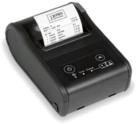

Driver Epson TM-P60II
Download do driver Spooler, Bluetooth da impressora térmica Epson TM-P60II, direto do site oficial.

- Papel58 mm · portátil
- ConexãoBluetooth, Wi-Fi
- SistemasWindows, Android, iOS
- BateriaSim
- UtilitárioEpson TM Printer Utility (app)
Bluetooth ou Wi-Fi, conforme a variante. Papel de 58 ou 60 mm.
Driver Epson TM-P60II para Windows
Driver Epson TM-P60II para Android
Driver Epson TM-P60II para iOS
Página oficial do modelo: abrir no site do fabricante.
Outras variações da linha Mobilink TM-P
Ver todos os drivers de impressora
Dúvidas sobre o driver Epson TM-P60II
Qual driver instalar na Epson TM-P60II?
Para Windows, Android, iOS, use os downloads desta página. O driver de impressão (Spooler) faz a Epson TM-P60II aparecer na lista de impressoras do sistema; o driver USB cria a porta virtual para programas que a exigem.
A Epson TM-P60II usa papel de qual largura?
A Epson TM-P60II usa bobina de 58 mm.
A Epson TM-P60II funciona por Bluetooth e Wi-Fi?
Sim, o modelo oferece conexão Bluetooth e Wi-Fi. Bluetooth ou Wi-Fi, conforme a variante. Papel de 58 ou 60 mm.
Os arquivos são oficiais?
Os itens com selo Site oficial levam direto ao fabricante. Arquivos de terceiros aparecem com o selo Não oficial: confira a origem e passe o antivírus antes de instalar.